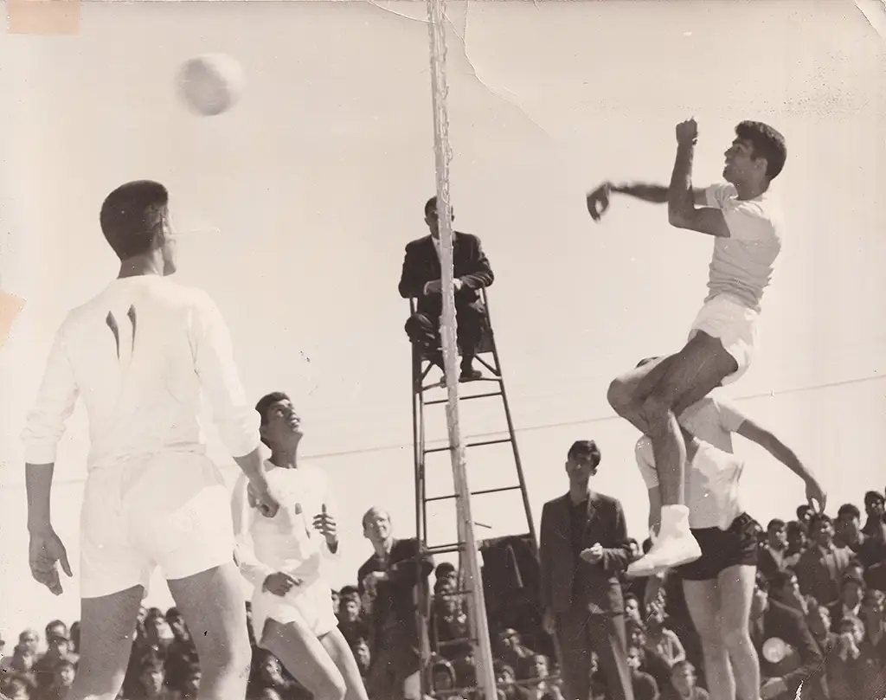
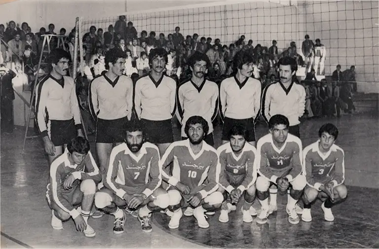
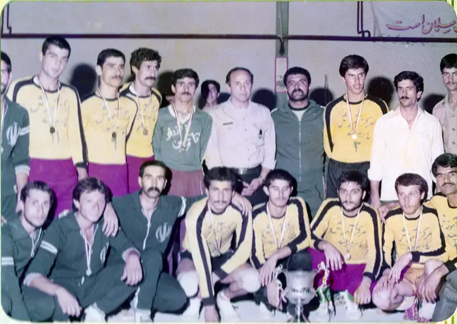

از کاپیتانی تا قهرمانی — میراث والیبال منوچهر شمشیری
هدایت تیم والیبال بیرجند به افتخارات استانی و ملی.
منوچهر شمشیری نه تنها یک مربی افسانهای، بلکه یک بازیکن والیبال بسیار ماهر و حرفهای نیز بود. در شهر بیرجند، او ستون بنیادین این ورزش بود و سالها از عمر خود را وقف رقابت و رهبری در زمین والیبال کرد.
در دوران اوج خود، او به عنوان کاپیتان تیم والیبال بیرجند فعالیت میکرد. تحت رهبری او، این تیم به نیرویی قدرتمند در منطقه تبدیل شد. بینش تاکتیکی و توانایی ورزشی استثنایی او به وی اجازه میداد تا همتیمیهایش را در مسابقات متعدد استانی و کشوری به سوی پیروزی هدایت کند.
برای مدتی، تیم والیبال بیرجند عملاً متوقفناپذیر بود. پیروزیهایی که آنها تحت کاپیتانی شمشیری به دست آوردند، افتخار را برای شهر به ارمغان آورد و جایگاه او را به عنوان یکی از تأثیرگذارترین چهرههای تاریخ والیبال خراسان تثبیت کرد.

سلطه بر زمینهای والیبال خراسان و فراتر از آن.
حضور منوچهر شمشیری در والیبال با دستاوردهای چشمگیری همراه بود. تیمهای او همواره در میان بهترینهای استان قرار داشتند و نفوذ او به ارتقای سطح والیبال در منطقه کمک کرد.
هدایت بیرجند به پیروزیهای متعدد در مسابقات بسیار رقابتی قهرمانی استان خراسان.
تبدیل بیرجند به نامی محترم در مسابقات کشوری والیبال و رقابت با بهترین تیمهای ایران.
دوران بازیکنی او پایهگذار دوران مربیگری افسانهایاش شد.
تجربهای که منوچهر شمشیری به عنوان کاپیتان و بازیکن حرفهای به دست آورد، عمیقاً بر نقش بعدی او به عنوان مربی تأثیر گذاشت. او بازی را از درون به بیرون درک میکرد — فشار، استراتژی و وزن عاطفی رهبری یک تیم.
این دانش دست اول به او اجازه میداد تا با بازیکنانش ارتباط برقرار کند و آنها را به طور مؤثر راهنمایی کند. چه در زمین به عنوان کاپیتان و چه در حاشیه زمین به عنوان مربی، اشتیاق او به والیبال یکسان باقی ماند: الهام بخشیدن به بزرگی و پرورش قهرمانان.
لحظات نادر از زمین والیبال — میراثی که بر پایه کار تیمی و اراده بنا شده است.
این عکسها لحظاتی از دوران حضور منوچهر شمشیری در زمین والیبال را ثبت کردهاند. از مسابقات محلی در بیرجند تا بازیها در برابر بهترینهای استان، این تصاویر داستان بازیکنی را روایت میکنند که همه چیز را برای تیم و شهرش فدا کرد.

